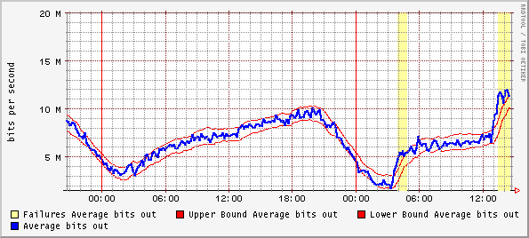
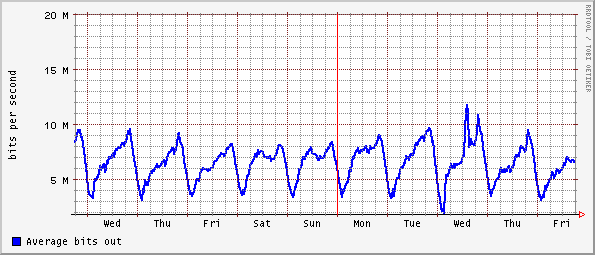

Jake Brutlag
(jakeb@corp.webtv.net)
Draft 3: August 23, 2000
Microsoft WebTV
1065 La Avenida
Mountain View, CA 94043
Summary
of Aberrant Behavior Detection Algorithm
RRD (http://ee-staff.ethz.ch/~oetiker/webtools/rrdtool)
is the acronym for Round Robin Database. RRD is a system to store and display
time-series data. It stores the data in a very compact way that will not expand
over time, and it presents useful graphs by processing the data at different
temporal resolutions. The RRDtool software is available as a standalone
application or as a PERL library. RRDtool is a nimble program that minimizes
the I/O operations required by real-time updates to time series. While not as
powerful as full-blown database software, it does provide the functionality
required by a real-time environment:
This document describes the
implementation of aberrant behavior detection for RRDTOOL. Some familiarity
with the internals of the current release (1.0.25) of RRDtool is assumed, as
this document makes reference to the pre-existing architecture.
There are several reasons
why support for aberrant behavior detection was integrated within RRDtool, as
opposed to implemented as a separate program. These include:
(1) Facilitates efficient real-time application of
aberrant behavior detection. Integration offer greater efficiency relative to
an external program with respect to I/O access. An external program would have
fetch data from RRD at the same frequency of update, while code within RRD
operates on this data already in-memory. Efficiency becomes a top priority for
the service network at the IAP/ISP level, where RRDtool can be essential part
of the monitoring system of hundreds of network interfaces and application
services.
(2) Leverages ability of RRDtool to perform the temporal
interpolation (data updates at irregular intervals) and conversion of counters
to rates.
(3) Leverages the graphing capabilities of RRDtool.
Graphs can be generated to display the results of aberrant behavior detection
using the existing capabilities of RRDtool.
(4) Leverages client software designed to run with
RRDtool (i.e. Cricket).
Aberrant behavior detection
is decomposed into three pieces, each building on its predecessor:
(1) An algorithm for predicting the values of a time
series one time step into the future.
(2) A measure of deviation between the predicted values
and the observed values.
(3) A mechanism to decide if and when an observed value
or sequence of observed values is ‘too deviant’ from the predicted value(s).
The Holt-Winters Time Series
Forecasting Algorithm is an online, or incremental, algorithm that adaptively
predicts future observations in a time series. It’s forecast is the sum of
three components: a baseline (or intercept), a linear trend over time (or
slope), and a seasonal coefficient (a periodic effect, such as a daily cycle).
There is one seasonal coefficient for each time point in the period (cycle).
After a value is observed, each of these components is updated via exponential
smoothing. The algorithm learns from past values and uses them to predict the
future. The rate of adaptation is governed by 3 parameters: alpha (intercept),
beta (slope), and gamma (seasonal). The
prediction can also be viewed as a ‘smoothed’ value for the time series.
The measure of deviation is
a seasonal weighted absolute deviation. The term ‘seasonal’ means deviation is
measured separately for each time point in the seasonal cycle. As with
Holt-Winters Forecasting, deviation is predicted using the measure computed
from past values (but only at that point in the seasonal cycle). After the
value is observed, the algorithm learns from the observed value via exponential
smoothing. Scaling the sequence of predicted deviation values for the observed
time series generates confidence bands (we usually think of the sequences as
continuous lines rather than as a set of discrete points).
Aberrant behavior (a
potential ‘failure’) is reported whenever the number of times the observed value
violates the confidence bands meets or exceeds a specified threshold within a
specified temporal window (i.e. 5 violations during the past 45 minutes with a
value observed every 5 mintues).
This section describes the
architecture of the implementation of aberrant behavior detection in the
RRDtool.
On disk, the round robin
database (RRD) is organized into sequential sections, round robin archives
(RRA). Within each RRA is a section for each of the data sources (input) stored
in this RRD. Each RRA is defined by a consolidation function which maps primary
data points (PDP) to consolidated data points (CDP). At another level, an RRA
is just an array of data values that is updated in sequence according to some
function at some fixed time interval.
On its face, the aberrant
behavior algorithm needs at least two arrays, one to store the forecast values
corresponding to each primary data point, and a second to store the predicted
deviation corresponding to each primary data point.
As implemented, the seasonal
coefficients and deviations that are used to calculate the forecast and
predicted deviations are stored in a second pair of RRAs. These arrays have
length equal to the seasonal period and are updated once for each primary data
point.
Failures are tracked by a
fifth RRA, which determines violations and failures on each call to RRD update.
The intercept and slope
coefficients required for the forecast are updated for every primary data point
and are unique for each data source (DS). They could be stored in a second pair
of RRAs. However, only the most recent value of each is required for a given
forecast. As implemented these parameters are stored in a temporary buffer in
the header allocated for each RRA-data source combination in the RRD (the CDP
prep area). This buffer is flushed back to disk on every call to RRD update.
The adaptation parameters
are fixed for the life of the RRA and are the same for all data sources within
that RRA. They are stored in the RRA parameter buffer (in RRA def), which is
read only during RRD update.
Therefore, implementation of
the aberrant behavior algorithm adds five new “consolidation functions” to
RRDtool:
(1) HWPREDICT: an array of forecasts computed by the
Holt-Winters algorithm, one for each primary data point. The HWPREDICT array
depends on an array of type SEASONAL for lookup of seasonal coefficients. The
index of this SEASONAL array is stored as a parameter of the HWPREDICT RRA.
(2) SEASONAL: an array of seasonal coefficients with
length equal to the seasonal period. For each primary data point, there is one
seasonal coefficient that matches the index in the seasonal cycle. In order to
update the seasonal coefficients via exponential smoothing, the SEASONAL RRA
depends on the HWPREDICT RRA. The index of the matching HWPREDICT RRA is stored
as a parameter.
(3) DEVPREDICT: an array of deviation predictions.
Essentially, DEVPREDICT copies values from the DEVSEASONAL array; it does no
processing of its own. The index of the DEVSEASONAL array is stored as a parameter.
(4) DEVSEASONAL: an array of seasonal deviations. For
each primary data point, there is one seasonal deviation that matches the index
of the primary data point in the seasonal cycle. In order to compute
deviations, DEVSEASONAL RRA must be able to compute the predicted value, and so
depends on the HWPREDICT RRA. The index of the matching HWPREDICT RRA is stored
as a parameter.
(5) FAILURES: an array of boolean indicators, a 1
indicating a failure. The RRA-DS buffer stores each value within the window.
Each update removes the oldest value from this buffer and inserts the new
observation. On each update, the number of violations is recomputed. The
maximum window length enforced by this buffer is 9 time points. For comparison
with deviations, the FAILURES RRA depends on the DEVSEASONAL RRA. The index of
the matching DEVSEASONAL RRA is stored as a parameter.
This section illustrates how
to use the aberrant behavior detection algorithm in RRDtool through an example.
Our monitoring target will
be a router interface on a link between two data centers in the WebTV
production service network. The variable will be the outgoing bandwidth rate
(in Mbps). Bandwidth usage follows a daily cycle and SNMP is polled at fives
minute intervals.
The first step is to create
a RRD for this target with aberrant behavior detection enabled. In order to
simplify the creation for the novice user, in addition to supporting explicit
creation the HWPREDICT, SEASONAL, DEVPREDICT, DEVSEASONAL, and FAILURES RRAs,
the enhanced RRDtool create command supports implicit creation of the other
four when HWPREDICT is specified alone. To take advantage of this, use the
following syntax:
RRA:HWPREDICT:<array
length>:<alpha>:<beta>:<period>
Where:
<array length> is the
number of predictions to store before wrap-around; this number must be longer
than the seasonal period. This value will also be the RRA row count for
DEVPREDICT RRA.
<alpha> is the
intercept adaptation parameter, which must fall between 0 and 1. A larger value
means the intercept adapts faster. The same value will be also be used for
gamma.
<beta> is the slope
adaptation parameter, again between 0 and 1.
<period> is the number
of primary data points in the seasonal period. This value will be the RRA row
counts for the SEASONAL and DEVSEASONAL RRAs.
Using this option creates
the FAILURES RRA with the default window length of 9 and a default threshold
value of 7. The default length of the FAILURES RRA is one period.
For the example, the create
command is:
rrdtool create monitor.rrd
–s 300 \
DS:ifOutOctets:COUNTER:1800:0:4294967295
\
RRA:AVERAGE:0.5:1:2016 \
RRA:HWPREDICT:1440:0.1:0.0035:288
While explicitly creating
the additional RRAs is one means of finer control, some parameters can be
changed using the tune command. Enhanced RRDtool supports several new tune
flags:
--window-length
--failure-threshold --alpha --beta –gamma –deltapos --deltaneg
Each of these flags takes a
single argument. The purpose of the argument is self-evident. The --gamma flag
will reset the adaptation parameter for both the SEASONAL and DEVSEASONAL RRAs
(setting both to the same value).
--deltapos and –deltaneg set
the scale parameter for the upper and lower confidence band respectively, the
default value for both is 2 (a symmetric confidence band).
For example, suppose we are
unhappy with the default window length and threshold for the FAILURES RRA
implicitly created by the previous command. Issue the command:
rrdtool tune monitor.rrd
--window-length 5 \
--failure-threshold 3
The remainder of the example
uses the default window length of 9 and the default threshold of 7.
In some cases, explicit
creation of the RRAs is required. Suppose the network technician is only
interested in smoothing the observed time series, not confidence bands or aberrant
behavior detection. The Holt-Winters Forecasting algorithm can be viewed a
smoothing algorithm. In this case, he can explicitly create the HWPREDICT and
SEASONAL RRAs without the others.
Use this syntax:
RRA:HWPREDICT:<length>:<alpha>:<beta>:<period>:<index
of SEASONAL>
RRA:SEASONAL:<period>:<gamma>:<index
of HWPREDICT>
The arguments of HWPREDICT
are the same as before, with the addition of:
<index of SEASONAL>
1-based index of the SEASONAL array in the order RRAs are specified in the
create command.
The arguments of the
SEASONAL RRA are:
<period> is the number
of primary data points in the seasonal period. It must match the value
specified by the <period> argument of HWPREDICT. It must be an integer
greater than 2.
<gamma> is the
adaptation parameter for seasonal coefficients, which must value between 0 and
1.
<index of HWPREDICT>
1-based index of the HWPREDICT array in the order RRAs are specified in the
create command
Confidence bands can be
created independently of aberrant behavior detection. In this case, create the
four RRAs HWPREDICT, SEASONAL, DEVSEASONAL, and DEVPREDICT but omit the
FAILURES RRA.
Use this syntax:
RRA:HWPREDICT:<length>:<alpha>:<beta>:<period>:<index
of SEASONAL>
RRA:SEASONAL:<period>:<gamma>:<index
of HWPREDICT>
RRA:DEVSEASONAL:<period>:<gamma>:<index
of HWPREDICT>
RRA:DEVPREDICT:<array
length>:<index of DEVSEASONAL>
The arguments of HWPREDICT
and SEASONAL are the same as before. The arguments of DEVSEASONAL and
DEVPREDICT are:
<period> is the number
of primary data points in the seasonal period. It must match the value
specified by the <period> argument of the HWPREDICT and SEASONAL arrays
(this restriction may be lifted in a future implementation). It must be an
integer greater than 2.
<array length> is the
number of deviations to store before wrap-around; this number must be longer
than the seasonal period.
<gamma> is the
adaptation parameter for seasonal deviations, which must value between 0 and 1.
It need not match the adaptation parameter for the SEASONAL array.
<index of HWPREDICT>
1-based index of the HWPREDICT array in the order RRAs are specified in the
create command
<index of DEVSEASONAL>
1-based index of the DEVSEASONAL array in the order RRAs are specified in the
create command
Finally, the FAILURES RRA
can be create explicitly with the syntax, but at a minimum the HWPREDICT,
SEASONAL, and DEVSEASONAL arrays must be created as well. If confidence bands
are also desired, create DEVPREDICT.
Use this syntax:
RRA:FAILURES:<length>:<threshold>:<window
length>:<index of DEVSEASONAL>
Where:
<length> is the number
of indicators (0,1 values) to store before wrap-around. A 1 indicates a
failure: that is, the number of violations in the last window of observations
meets or exceeds the threshold.
<threshold> is the
minimum number of violations within a window (observed values outside the
confidence bounds) that constitutes a failure.
<window length> is the
number of time points in the window. Specify an integer greater than or equal
to the threshold and less than or equal to 28 (the maximum value).
<index of DEVSEASONAL>
1-based index of the DEVSEASONAL array in the order RRAs are specified in the
create command.
The aberrant behavior
detection algorithm requires nothing unusual for the RRDtool update command; so
the collection mechanism (i.e. Cricket invoking SNMP) will run normally. Now
suppose some time has passed and the network technician is monitoring outgoing
bandwidth at the router interface. He can view a graph of daily activity, including
confidence bands and any failures, with the following command:
rrdtool graph example.gif \
DEF:obs=monitor.rrd:ifOutOctets:AVERAGE
\
DEF:pred=monitor.rrd:ifOutOctets:HWPREDICT
\
DEF:dev=monitor.rrd:ifOutOctets:DEVPREDICT
\
DEF:fail=monitor.rrd:ifOutOctets:FAILURES
\
TICK:fail#ffffa0:1.0:”Failures
Average bits out” \
CDEF:scaledobs=obs,8,* \
CDEF:upper=pred,dev,2,*,+ \
CDEF:lower=pred,dev,2,*,- \
CDEF:scaledupper=upper,8,* \
CDEF:scaledlower=lower,8,* \
LINE2:scaledobs#0000ff:”Average
bits out” \
LINE1:scaledupper#ff0000:”Upper
Bound Average bits out” \
LINE1:scaledlower#ff0000:”Lower
Bound Average bits out”
TICK is a new graphing
option in RRD tool. For every non-zero value in the DEF or CDEF argument, it
plots a tick mark. The length of the mark (line) is specified by the third
argument (after the color code) as a decimal percentage of the y-axis. 1.0 is
100% of the length of the y-axis, so the tick mark becomes a vertical line on
the graph.
Here is an example of this
daily graph generated on Wed, May 31, 2000 for the router target described
previously:

The thin red lines are the
confidence bands and the yellow bars represent failures (actually multiple
failures in sequence—once the observed value strays outside the confidence
bands it remains outside the bands for roughly a two hour period in both
cases). The TICK graph option generated the yellow bars from the FAILURES RRA.
The graph suggests that
bandwidth on this outgoing link is increasing faster than expected by the model
(past history). It is up to the network technician to decide if this represents
aberrant behavior of interest. One approach the technician might take is to
view the time series for this router interface over a longer time period.
With hindsight, it is easy
to demonstrate something unusual is going on and the aberrant behavior
detection model is catching it in real time. Here is the time series for the
week and half period from May 24, 2000 to June 2, 2000:

It is clear that Wed, May
31, is unusual. Bandwidth increases in two steps: once in the early morning and
again in the early afternoon. In this case, the dip to 0 in the early morning
hour and the subsequent jump can be attributed to a scheduled downtime for the
service network. Perhaps the remainder of bandwidth activity on Wed has the
same cause, in which case aberrant behavior detected is a false positive in the
eyes of the network technician.
Given the example, it is
clear that there are many benefits of aberrant behavior detection, but it does
complicate the software implementation and impact runtime performance. These
details are discussed in this section.
For the five aberrant
detection RRAs, every time a primary data point (PDP) is calculated by
rrd_update, each of the RRAs is updated. This translates into five additional
disk seek/write operations.
Furthermore, the SEASONAL and DEVSEASONAL RRAs each require a seek/read
operation. While the number of additional disk operations is independent of the
number of data sources and these operations are performed sequentially whenever
possible (i.e. seek avoids moving backwards within the file), these operations
do add significant I/O cost relative to a RRD without the aberrant detection
RRAs. In a conventional RRD file, there is usually only one RRA that is updated
for every PDP, requiring only a single seek/write operation.
After the update, the
cdp_prep areas of the HWPREDICT and SEASONAL RRAs contain sufficient
information to make a forecast of future values. The next predicted value can
be computed using the following formula:
Prediction = intercept +
slope • (sequence length of unknown values + 1)
+
seasonal coefficient
The intercept is stored in
the CDP_hw_intercept member of the cdp_prep area of the HWPREDICT RRA and the
data source of interest. The slope is stored in the CDP_hw_slope member of the
cdp_prep area of the HWPREDICT RRA. The expression, (sequence length of unknown
values + 1), is stored as the CDP_null_count member of the cdp_prep area of the
HWPREDICT RRA. Finally, the seasonal coefficient is stored in the
CDP_hw_seasonal member of the cdp_prep area of the SEASONAL RRA and the data
source of interest.
Aberrant behavior detection
does not need to compute the prediction until the value to be predicted is
already observed, but it is conceivable that another application may want the
prediction before the value is observed. This could be facilitated in the
future by adding a new call, rrd_predict, to read the appropriate buffers of
HWPREDICT and SEASONAL RRAs and compute the prediction.
Isolated or sequences of
unknown (U) values are generally not a problem for the Holt-Winters algorithm,
either in making forecasts or in updating values (basically, for a unknown
value, no update occurs). The algorithm can actually forecast multiple steps
into the future, provided the initialization phase is complete.
A bulk update can occur when
a time interval between observed values exceeds the step size. In this case,
the observed value generates more than one primary data point. If the interval
exceeds the heartbeat of a data source, all the intervening primary data points
will be set to unknown (U), otherwise they will be set to the same (equal)
value.
Bulk updates create a
complication for the aberrant detection RRAs, which are updated for every
primary data point. The primary issue is the cost of computing the prediction
and predicted deviation. Unlike the case of the conventional consolidation
function (i.e. average or maximum), the interim consolidated data points (CDPs)
for the aberrant detection RRAs are not identical and must be computed
separately.
This computation cost aside,
there are implementation issues related to the interdependencies between the
aberrant detection RRAs. Essentially, to compute the predictions and predicted
deviations in sequence, each RRA requires its dependent RRAs to be synchronized
(at the same time point). However, the architecture of the rrd_update function
is to process each RRA independently of the others. This architecture is
imposed by the optimization that writes to each RRA occur in sequence.
Given in these issues,
updates in excess of 2 CDPs per observed value (that is, an observed value
which translates into more than 2 PDPs) are not currently supported by the
aberrant detection implementation. The intermediary CDPs are set to U. In the
future, the implementation may support bulk updates, especially as algorithm
can handle sequences of U values as input.
The implementation is
designed to use bootstrap initialization. The intercept coefficient is
initialized to the first known value. The slope is initialized to 0; this
initialized is predicated on the assumption the linear trend over time is close
to 0. If this is not the case, the time required for the Holt-Winters algorithm
to gravitate away from 0 will depend on the seasonal adaptation parameter,
gamma. During the first seasonal cycle of known values, seasonal coefficients
are initialized. During the second seasonal cycle of known values, seasonal
deviations are initialized.
The sensitivity of the
algorithm to the initial values (the first two cycles), declines over time as
determined by the adaptation parameters. The weight of the initial value
persists longer than subsequent values. For example, given a daily cycle, no
periodic smoothing, and gamma = 0.1, the weight of the initial value in the
tenth iteration (day) seasonal component is »0.4. In contrast, the weight of the second day
observation at the same point in the cycle is only »0.04.
Unknown values during the
first two seasonal cycles can complicate the cold-start. The implementation
initializes any coefficients it can during the first two cycles. If some
coefficients remain unknown due to unknown values, they are initialized during
the first subsequent cycle with known value at that time point in the cycle. As
the first value of a COUNTER data source is always unknown, the minimum
cold-start period for COUNTER data sources is three seasonal cycles.
Reflecting the belief that
seasonal coefficients and deviations are smooth periodic functions of time, the
implementation periodically runs a moving-average smoother with a window of 5%
of the period on the DEVSEASONAL and SEASONAL RRAs. This operation requires
reading all DEVSEASONAL and SEASONAL RRA values from disk, updating them, and
flushing them back to disk.
The smoother is run once per
period, at an offset determined by a FNV hashing algorithm on the file name of
the RRD file. The intent of the hashing algorithm is to prevent temporal
clumping of smoothing operations for multiple RRD files (as RRDTOOL usually
runs in a environment with multiple RRD files).
The rra_def parameters and
cdp_prep areas provided by the RRD structure definition are sufficient to store
all necessary parameters on disk in and in memory for the aberrant behavior
detection algorithm, previously the dump and restore (to/from XML) functions
did not fully support the import/export of these data structures. The
implementation now flushes all RRA parameters to XML using the <param>
tag on dump and the restore function reads the new tags. The contents of the
cdp_prep areas are written as before, marked by the <ds> tag. To identify
the new XML format, the implementation uses a version tag of 0002.
The following list describes
files modified from the current release (1.0.25) of RRDtool to implement
aberrant behavior detection:
rrd_create.c : support for
creation of HWPREDICT, SEASONAL, DEVSEASONAL, and DEVPREDICT RRAs.
rrd_dump.c : support for
exporting rra_def par and cdp_prep scratch variables.
rrd_restore.c : support for
importing rra_def par and cdp_prep scratch variables.
rrd_hw.c : main routines for
updating Holt-Winters RRAs; smoothing routines; FIFO queue implemetation.
rrd_update.c : call routines
in rrd_hw.c as appropriate; rewrite for efficient bulk updates
rrd_graph.c : add data
reduction support for HWPREDICT, SEASONAL, DEVSEASONAL, and DEVPREDICT RRAs;
adding the TICK graph element.
rrd_format.h : add
enumeration values for reference in RRA and CDP scratch arrays.
rrd_tool.h : function
prototypes, FIFO queue method prototypes.
hash_32.c : implementation
of FNV hash.
fnv32.h : header file for
FNV routines.